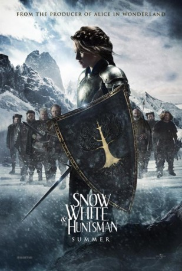
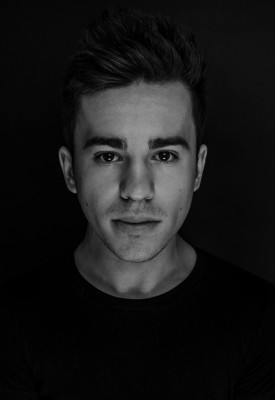

#2463 Schneewittchen und der Jäger
Alternativ: Snow White and the Huntsman
Auszeichnungen: für 2 Oscars nominiert
 
 IMDB-Wertung: 6.1 / 10
IMDB-Wertung: 6.1 / 10  Metascore: 57
Metascore: 57 
Snow White, imprisoned daughter of the late king, escapes just as the Magic Mirror declares her the source of the Evil Queen's immortality. The Queen sends her men, led by a local huntsman, to bring her back. But upon her capture, the huntsman finds he's being played and turns against the Queen's men, saving Snow White in the process. Meanwhile, Snow's childhood friend, William, learns that she is alive and sets off to save her.
Jahr: 2012
Dauer: 127 Minuten
FSK: 12
Land: USA Studio: Universal PicturesTonspuren: DTS - ,
Untertitel: Deutsch,
Auflösung: 1080p (1920x816) Größe: 7321 MB
Genre: Action, Drama, Abenteuer, Fantasy
Regisseur: Rupert Sanders
Drehbuch: Evan Daugherty, John Lee Hancock, Hossein Amini, Evan Daugherty
Soundtrack: James Newton Howard
Darsteller:
 Kristen Stewart als Snow White
Kristen Stewart als Snow White Chris Hemsworth als The Huntsman
Chris Hemsworth als The Huntsman Charlize Theron als Ravenna
Charlize Theron als Ravenna Sam Claflin als William
Sam Claflin als William Sam Spruell als Finn
Sam Spruell als Finn Ian McShane als Beith
Ian McShane als Beith Bob Hoskins als Muir
Bob Hoskins als Muir Ray Winstone als Gort
Ray Winstone als Gort Nick Frost als Nion
Nick Frost als Nion Eddie Marsan als Duir
Eddie Marsan als Duir Toby Jones als Coll
Toby Jones als Coll Johnny Harris als Quert
Johnny Harris als Quert Brian Gleeson als Gus
Brian Gleeson als Gus Vincent Regan als Duke Hammond
Vincent Regan als Duke Hammond- Liberty Ross als Snow White's Mother
 Noah Huntley als King Magnus
Noah Huntley als King Magnus Chris Obi als Mirror Man
Chris Obi als Mirror Man- Lily Cole als Greta
- Rachael Stirling als Anna
- Hattie Gotobed als Lily
 Raffey Cassidy als Young Snow White
Raffey Cassidy als Young Snow White- Xavier Atkins als Young William
 Anastasia Hille als Ravenna's Mother
Anastasia Hille als Ravenna's Mother- Izzy Meikle-Small als Young Ravenna
 Mark Wingett als Thomas
Mark Wingett als Thomas Jamie Blackley als Iain
Jamie Blackley als Iain Dave Legeno als Broch
Dave Legeno als Broch Matt Berry als Percy
Matt Berry als Percy Greg Hicks als Black Knight General
Greg Hicks als Black Knight General Peter Ferdinando als Black Knight
Peter Ferdinando als Black Knight- Andrew Hawley als Guard on Duty
- Joey Ansah als Aldan
 Gregor Truter als Duke's Commander
Gregor Truter als Duke's Commander-  Edd Osmond als Gort Dwarf Double
 Lasco Atkins als Palace Worker , uncredited
Lasco Atkins als Palace Worker , uncredited- Lee Bennett als Dark Army Warrior , uncredited
 Kenneth W Caravan als Nobelman , uncredited
Kenneth W Caravan als Nobelman , uncredited- Duncan Casey als Ravenna Guard , uncredited
- Lucy Chappell als Prisoner Girl , uncredited
- Jake Francis als Ravenna's Archer , uncredited
 Neve Gachev als Fendland Woman , uncredited
Neve Gachev als Fendland Woman , uncredited Roman Green als Village Peasant Amputee , uncredited
Roman Green als Village Peasant Amputee , uncredited- Matt Hookings als Magnus Guard , uncredited
- Darren Kent als Emaciated Peasant , uncredited
- Oliver Mayo als Ravenna Guard , uncredited
- Brendan McCoy als Warrior - Duke's Army , uncredited
- Jo Osmond als Beith Dwarf Double , uncredited
- Paradox Pollack als Bat Faerie , uncredited
 Jd Roth-round als Ravenna Guard , uncredited
Jd Roth-round als Ravenna Guard , uncredited- Andrew Scott-Marshall als Dukes Knight , uncredited
Datei: X:\2012(N-Z)\Schneewittchen und der Jäger (2012, FSK12, 1920x816).mkv seit 12.11.2015
Festplatte: HD 2012(N-Z)-2013(A-H)
 Es gibt insgesamt 138 Filme in der Gruppe '2012(N-Z)'
Es gibt insgesamt 138 Filme in der Gruppe '2012(N-Z)'